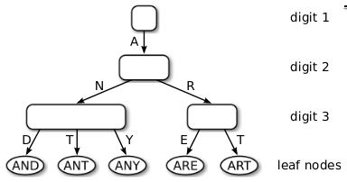

The Adaptive Radix Tree – ARTful Indexing for Main-Memory Databases
Table of Contents
DECLARATION
This page is the <The Adaptive Radix Tree> paper. Original Paper Link is: https://db.in.tum.de/%7Eleis/papers/ART.pdf
ABSTRACT
Fakultät für Informatik Technische Universität München Boltzmannstrae 3, D-85748 Garching <lastname>@in.tum.de
Abstract—Main memory capacities have grown up to a point where most databases fit into RAM. For main-memory database systems, index structure performance is a critical bottleneck. Traditional in-memory data structures like balanced binary search trees are not efficient on modern hardware, because they do not optimally utilize on-CPU caches. Hash tables, also often used for main-memory indexes, are fast but only support point queries.
To overcome these shortcomings, we present ART, an adaptive radix tree (trie) for efficient indexing in main memory. Its lookup performance surpasses highly tuned, read-only search trees, while supporting very efficient insertions and deletions as well. At the same time, ART is very space efficient and solves the problem of excessive worst-case space consumption, which plagues most radix trees, by adaptively choosing compact and efficient data structures for internal nodes. Even though ART’s performance is comparable to hash tables, it maintains the data in sorted order, which enables additional operations like range scan and prefix lookup.
1 INTRODUCTION
After decades of rising main memory capacities, even large transactional databases fit into RAM. When most data is cached, traditional database systems are CPU bound because they spend considerable effort to avoid disk accesses. This has led to very intense research and commercial activities in main-memory database systems like H-Store/VoltDB 1, SAP HANA 2, and HyPer 3. These systems are optimized for the new hardware landscape and are therefore much faster. Our system HyPer, for example, compiles transactions to machine code and gets rid of buffer management, locking, and latching overhead. For OLTP workloads, the resulting execution plans are often sequences of index operations. Therefore, index efficiency is the decisive performance factor. More than 25 years ago, the T-tree 4 was proposed as an in-memory indexing structure. Unfortunately, the dramatic processor architecture changes have rendered T-trees, like all traditional binary search trees, inefficient on modern hardware. The reason is that the ever growing CPU cache sizes and the diverging main memory speed have made the underlying assumption of uniform memory access time obsolete. B+-tree variants like the cache sensitive B+-tree 5 have more cache-friendly memory access patterns, but require more expensive update operations. Furthermore, the efficiency of both binary and B+-trees suffers from another feature of modern CPUs: Because the result of comparisons cannot be predicted easily, the long pipelines of modern CPUs stall, which causes additional latencies after every second comparison (on average).
These problems of traditional search trees were tackled by recent research on data structures specifically designed to be efficient on modern hardware architectures. The k-ary search tree 6 and the Fast Architecture Sensitive Tree (FAST) 7 use data level parallelism to perform multiple comparisons simultaneously with Singe Instruction Multiple Data (SIMD) instructions. Additionally, FAST uses a data layout which avoids cache misses by optimally utilizing cache lines and the Translation Lookaside Buffer (TLB). While these optimizations improve search performance, both data structures cannot support incremental updates. For an OLTP database system which necessitates continuous insertions, updates, and deletions, an obvious solution is a differential file (delta) mechanism, which, however, will result in additional costs.
Hash tables are another popular main-memory data structure. In contrast to search trees, which have O(log n) access time, hash tables have expected O(1) access time and are therefore much faster in main memory. Nevertheless, hash tables are less commonly used as database indexes. One reason is that hash tables scatter the keys randomly, and therefore only support point queries. Another problem is that most hash tables do not handle growth gracefully, but require expensive reorganization upon overflow with O(n) complexity. Therefore, current systems face the unfortunate trade-off between fast hash tables that only allow point queries and fully-featured, but relatively slow, search trees.
A third class of data structures, known as trie, radix tree, prefix tree, and digital search tree, is illustrated in Figure 1.

Figure 1: Figure 1 ""
These data structures directly use the digital representation of keys instead of hashing or comparing keys. The underlying idea is similar to a thumb-index found in many alphabetically ordered dictionary books: The first character of a word can directly be used to jump to all words starting with that character. In a computer, this process can be repeated with the next characters until a match is found. As a consequence of this process, all operations have O(k) complexity where k is the length of the key. In the era of extremely large data sets, when \(n\) is growing faster than k, having a time complexity independent of \(n\) is very attractive.
In this work, we present the adaptive radix tree (ART) which is a fast and space-efficient in-memory indexing structure specifically tuned for modern hardware. While most radix trees require to trade off tree height versus space efficiency by setting a globally valid fanout parameter, ART adapts the representation of every individual node, as exemplified in Figure 1. By adapting each inner node locally, it optimizes global space utilization and access efficiency at the same time. Nodes are represented using a small number of efficient and compact data structures, chosen dynamically depending on the number of child nodes. Two additional techniques, path compression and lazy expansion, allow ART to efficiently index long keys by collapsing nodes and thereby decreasing the tree height.
2 Second
xxx.